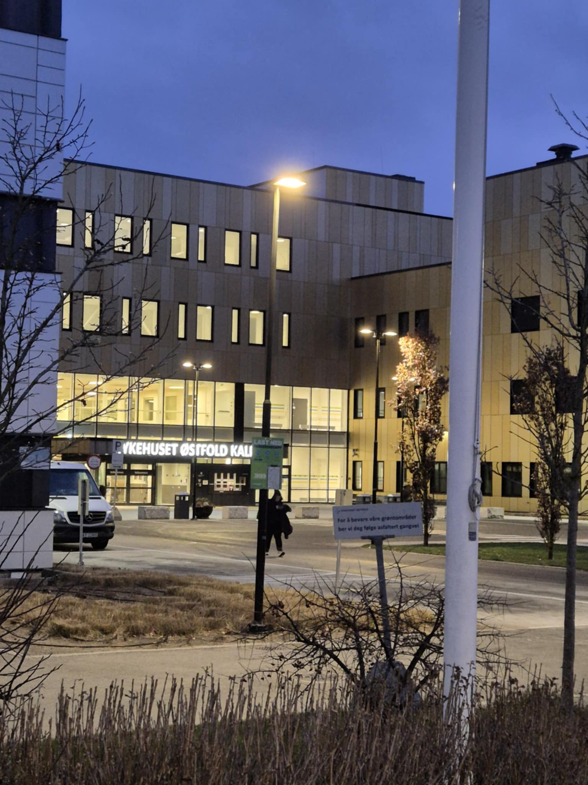
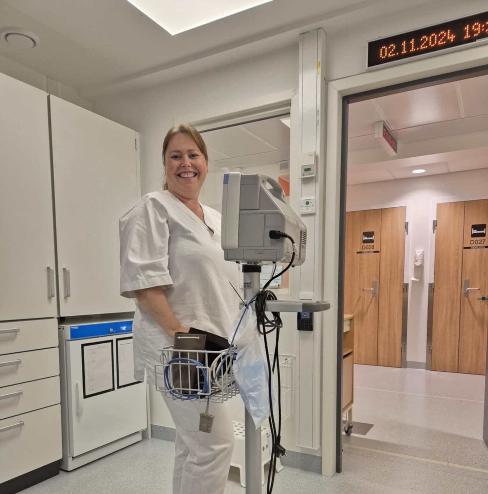
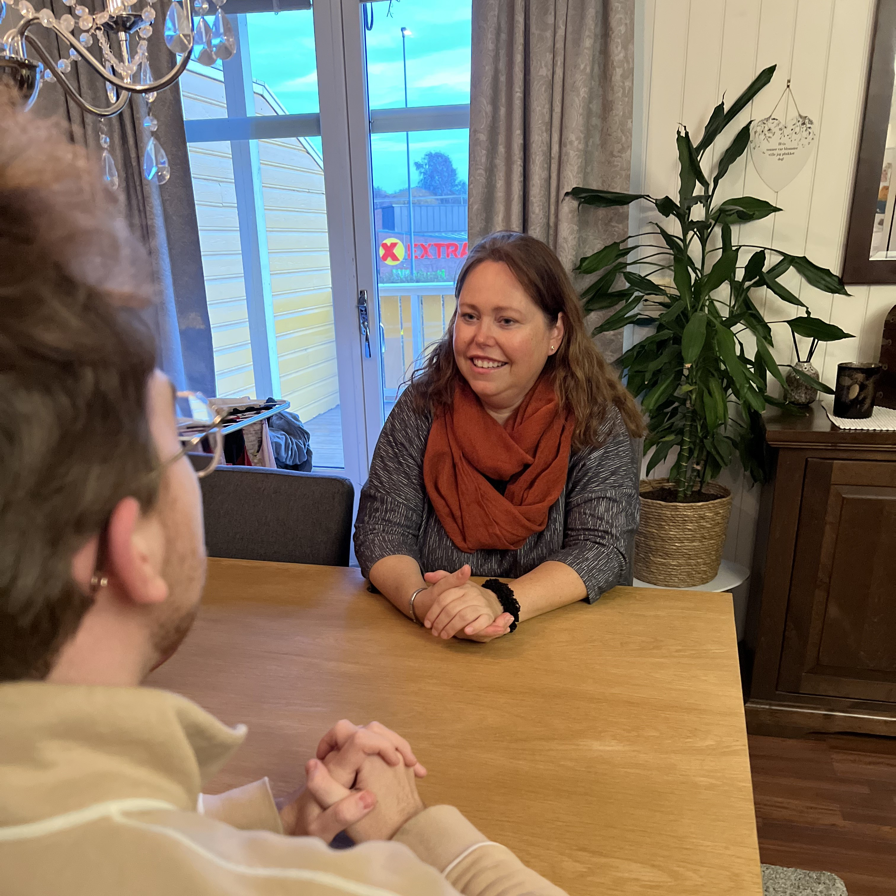

Er Norge klar for en ny pandemi?

Etter erfaringene fra Covid-19 pandemien står spørsmålet om Norges beredskap for en ny global helsekrise høyt på agendaen. Hvordan er landet rustet til å håndtere en ny potensielt farligere pandemi, og hva har vi egentlig lært fra den forrige? Gjennom et intervju med sykepleier Kristin Jensen får vi et innblikk i helsevesenets beredskap og de utfordringene som fortsatt gjenstår.
Belastningen på helsepersonell
Tiltak som bruk av munnbind, hansker og smittefrakker ble avgjørende for å beskytte ansatte og pasienter. Likevel var belastningen på helsepersonell stor. Kristin forteller om lange dager med tungt smittevernutstyr og usikkerhet rundt sykdommens utvikling.
– Det var en psykisk og fysisk påkjenning. Mange ansatte slet med utmattelse, frykt og frustrasjon over at vi aldri visste hvor lenge det skulle vare og hvor mye ekstra vi måtte jobbe, sier hun.

Dette illustrerer behovet for bedre støtte og beskyttelse for helsepersonell under fremtidige pandemier.
Kristin beskriver hvordan sykehusene opererer med et fargekodet beredskapssystem for å styre ressursene under eventuelle kriser som en pandemi.
– Under covid-19 pandemien gikk vi fra grønt, som indikerer normal drift, til rødt, hvor planlagte operasjoner ble avlyst, og mange ansatte ble omplassert til kritiske oppgaver, forklarer Kristin.
Pandemien viste hvor raskt helsevesenet kan bli overbelastet, særlig på grunn av karanteneplikten som reduserte bemanningen kraftig. I tillegg ble mange ansatte smittet selv. Dette førte til at sykehusene måtte prioritere ressurser strengt, noe som skapte utfordringer både for ansatte og pasienter.
Lærdom fra covid-19
Kristin mener pandemien har gjort helsevesenet bedre forberedt på enkelte områder.
– Vi har blitt langt bedre på smittevernrutiner og testing, sier hun.
Likevel savner hun konkrete tiltak for å forhindre overbelastning av personell i fremtiden fra ledelsen, noe som personale ikke har fått noe informasjon om per dags dato, selv 2 år etter forrige pandemi.
Hun peker også på viktigheten av fleksibilitet i helsevesenet, slik at ansatte kan omplasseres raskt ved behov. Dette krever ikke bare god planlegging, men også tilstrekkelig bemanning og ressurser for å takle en eventuell ny krise.
En viktig lærdom fra covid-19-pandemien er betydningen av individuell smittevernbevissthet. Kristin oppfordrer alle til å huske hvor viktig tiltak som håndvask, bruk av munnbind og sosial distansering var for å begrense smittespredningen.
– Systemet kan i teorien være godt nok forberedt, men det vil alltid være en viss usikkerhet rundt nye og ukjente sykdommer. Individuell innsats vil alltid være avgjørende, understreker Kristin.
Blir for krevende i lengden
Kristin forklarer at hun ikke vet om hun hadde taklet en ny og eventuelt farligere pandemi, spesielt da hun føler sykehuset ikke har fått noen klare løsninger på de tidligere problemene som oppsto. Covid var såpass krevende og preget av usikkerhet, hadde vi taklet en enda mer dødeligere versjon?
– Det var mye testing hele tiden, pasienter, ansatte, alle måtte testes. Mange var hjemme i karantene, noe som skapte ekstra press på oss som var på jobb, forteller hun.
Frykten for smitte, enten for seg selv eller familie var alltid til stede, til tross for bruk av munnbind og annet smittevernutstyr.

Man visste aldri helt hva som kunne skje eller hvor farlig det kunne bli. Det var slitsomt både fysisk og psykisk, spesielt når vi måtte jobbe med strengt smitteutstyr hele dagen, sier Kristin.
Likevel understreker hun viktigheten av å bevare roen og holde fokus midt i kaoset
– Vi hadde respekt for situasjonen, men usikkerheten gjorde alt ekstra tungt.
Norge er bedre rustet enn før, men fortsatt ikke godt nok. En ny pandemi vil kreve både bedre beredskapsplaner og en kontinuerlig innsats for å styrke helsetjenesten. Erfaringene fra covid-19 har gitt oss et verdifullt utgangspunkt, men det er fortsatt en lang vei å gå for å sikre at landet er fullt forberedt på fremtidige helsekriser.